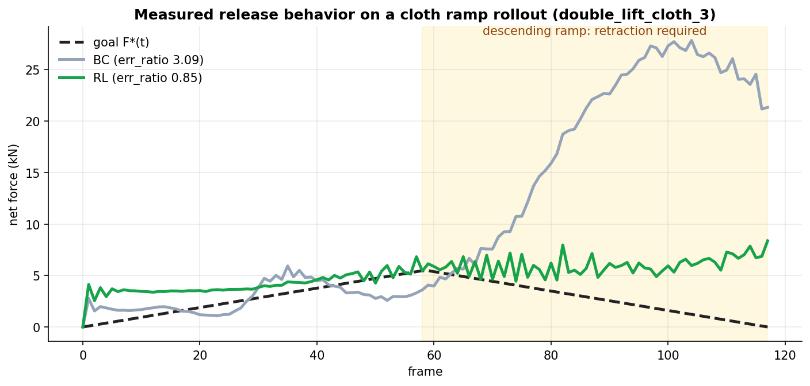

Given the current state of a deformable object and a goal force, we learn the
gripper motion that produces it, across ropes, cloth, and plush toys.
We present two methods: an open-loop policy that acts from state and goal
alone, and a closed-loop policy that additionally senses the force it is
currently applying.
Arshia Ilaty ·
Malak Gamal El-Din
University of California, Irvine · CS 175 / CS 275
Our best force-tracking rollout (cloth lift, tracking error 0.16). Particles show the
simulated object; the solid arrow is the force the gripper produces and the dashed arrow is
the commanded target.
Overview
Our goal is contact-force control on deformable objects: move the gripper,
frame by frame, so that the force on the object tracks a target trajectory F*(t), across
objects whose stiffness varies by orders of magnitude. We address this with two methods,
open-loop and closed-loop control.
All experiments run inside PhysTwin,
which reconstructs each object from RGB-D video as a calibrated spring-mass digital twin.
The twin's spring forces serve as ground-truth force labels: exact, dense, and available every
frame, with no physical sensor anywhere in the pipeline.
Contributions
The primary contribution is the setting: commanded-force tracking on a
per-video-calibrated deformable twin spanning a wide stiffness range. No neighboring line of
work takes a force trajectory as the task specification:
Approach
Input
Output
Supervision
Limitation
PhysTwin (Jiang et al., 2025)
RGB-D video
calibrated spring-mass twin and recovered forces
per-case physics optimization
reconstruction and replay only; no control
VLA policies (RT-2, OpenVLA, π0)
images and language
action chunks
large-scale demonstrations
force is never an input or an output
Learned deformable dynamics (RoboCraft, RoboCook)
point clouds
predicted particle motion, used for planning
sim/real state transitions
plans shapes, not contact-force profiles
Classical force control (impedance / admittance)
force-torque sensor reading
joint torques
none (hand-designed law)
requires a physical sensor and a rigid-body model
Ours
state and force goal
gripper displacements
target force trajectory (via BC and RL)
simulation only at present
Concretely, we implement a driver hooked directly into PhysTwin's Warp GPU simulator, build a
policy dataset from real and synthetic rollouts, and train policies that actively
regulate contact force rather than replay or predict it.
Force-tracking rollout on rope (low stiffness).
Force-tracking rollout on cloth (medium stiffness).
Force-tracking rollout on a plush toy (high stiffness).
Force-tracking rollouts across the three object types. The solid arrow is the force the
gripper produces; the dashed arrow is the commanded target. The same control problem spans
objects whose stiffness differs by orders of magnitude.
Problem Setup
Each frame, the policy reads the object's current state and a goal force and outputs a
6D gripper displacement such that the contact force on the object matches the
goal. We implement this with two methods, open-loop and
closed-loop control.
GoalTrack a target force trajectory F*(t) in a live rolloutOutput6D gripper displacement per hand, per frameForce labelsSpring forces from the calibrated PhysTwin simulator; no physical force sensorsMetricerr_ratio: tracking error relative to the goal magnitude. 0 is perfect, 1 means the error equals the goal, above 1 indicates loss of control.
Two methods, one difference in input
Open-loop no feedback
Object particle statistics describing the current deformation
Goal force per gripper
Material descriptor
Acts from state and goal alone; it never observes the force it actually produces.
Closed-loop force feedback
Everything the open-loop policy observes, plus:
＋ Current achieved force per gripper
Feedback lets it measure its own tracking error and correct it frame by frame.
Particle statistics summarize hundreds of particle positions into a fixed-size vector: shape
change, motion, and gripper-contact distances.
Evaluation: replay and ramp
Both methods are evaluated in live rollouts under two kinds of goal:
Replay in-distribution
F*(t) is a recorded force trajectory from the dataset.
Tests whether the policy can reproduce forces it has seen examples of.
Ramp out-of-distribution
F*(t) is a synthetic ramp that rises from zero to a peak and returns to zero, never seen in training.
Tests whether the policy can track a novel goal.
The ramp is difficult for one specific reason: its descending half requires the gripper to
retract, and human demonstrations never retract deliberately.
Three levels of generalization
Frame-level. Hold out one contiguous time window per case. Contiguity
matters: interleaved frames would reveal held-out answers through velocity features.
Trajectory-level. Roll out on a goal constructed at test time (the ramp).
Material-level. Hold an entire material out of training and rely on the
material descriptor to transfer.
The three nested generalization splits, from weakest to strongest.
The data
Recorded force over time, one panel per material. Every training label lies on one of these
curves.
Force scales span roughly 40× across the dataset, so one network must
operate in what amounts to three different unit systems.
Stiffness alone does not separate the materials. Rope, cloth, and plush
overlap in stiffness but separate by force scale. This motivates the material descriptor
below, and also creates the privileged-information issue we identify in Experiment 6.
The material descriptor
One policy network handles all three materials, so it needs a description of the object it is
holding. We provide a two-number fingerprint: the object's stiffness and
the force scale the episode operates at. A stiff object generates more force
for the same motion, so the policy should move less per unit of desired force change. The
figure below visualizes this descriptor space: each case is placed by its stiffness and its
typical force scale, and materials that overlap in stiffness separate cleanly by force scale.
The descriptor space: each point is one case, placed by stiffness (x) and mean episode force
(y, log scale).
Physics Sweeps & Open Loop Control - Arshia
Teacher forcing: replay a fixed synthetic gripper script with no feedback.
The only variables are physics parameters: object stiffness (×0.5, ×1.0, ×2.0) and surface
proxies (concrete, grass, rubber). The motion is identical every time; we measure how peak
contact force responds.
Pick a donor case per material (cloth, rope, sloth) and a motion script (hold_release or linear_push).
Replay the identical controller trajectory while scaling stiffness and swapping surface friction and restitution.
Record the per-frame net wrench from the simulator: 27 scenarios (54 in the expanded grid).
Plot peak force against stiffness and force trajectories over time.
Main result: for a fixed motion, stiffer objects produce higher peak force (+40–90% across materials). Surface friction is secondary for these motions.
Peak force by surface, averaged across materials.
|F|(t) at baseline stiffness, showing timing and shape.
Forward model: deformation to force
A per-material MLP maps the summary features to net wrench. We report two evaluation modes
that answer different generalization questions.
Split
Question
How it works
Cloth R²
Rope R²
cross_case
New manipulation held out?
Entire test case unseen during training
0.62
negative*
random_block
Unseen frames in the same trajectory?
Hold out ~20% contiguous frame blocks per case
0.90 ± 0.05
0.59 ± 0.05
*Rope cross-case trains on a single-hand push and tests on a two-hand case: a regime
mismatch rather than under-training.
Cloth: predicted vs actual force (random_block split).
Rope: predicted vs actual force (random_block split).
The physics study above characterizes the forward direction (motion to force). The
remainder of this page addresses the inverse problem: given a desired force, what
gripper motion achieves it?
Closed-Loop Force Control
The closed-loop policy observes the force it is currently producing. Every frame it reads the
state, the achieved force, and the goal, then outputs a displacement; the simulator advances
and the resulting force feeds back into the next decision.
The closed loop. Removing the red feedback arrow (the achieved force) yields the open-loop
policy.
The closed-loop policy's per-frame observation. The achieved force input is
the closed-loop addition; the open-loop policy observes everything else.
Why feedback matters: teacher forcing vs student forcing
Training data shows the policy only correct states (teacher forcing). At deployment
the policy drives the simulation itself (student forcing): one imperfect action places it in a
state it never trained on, and errors compound. This distinction explains most of the failure
modes reported below, and force feedback is the policy's only mechanism for detecting its own
drift.
Running example: double_lift_cloth_1
t = 0
The cloth hangs between two grippers at rest with contact force near zero. The policy reads
the particle statistics, the zero achieved force, the first goal force, and the cloth
material descriptor.
t = 1…T
Each frame the policy outputs a 6D displacement; the springs stretch and a new force is
measured. The policy compares achieved force to the goal and adjusts. The resulting gripper
trajectory is entirely the policy's own, not taken from any demonstration.
eval
The err_ratio over the full rollout is 0.22 for this case (best BC result):
the average tracking error is 22% of the goal magnitude.
BC, best case: double_lift_cloth_1, err_ratio 0.22. The colored arrow is the achieved force and the dashed arrow is the goal. The policy tracks the recorded trajectory closely.
BC, ramp failure: the same case with a synthetic ramp goal that peaks and returns to zero. BC never retracts; err_ratio 6.55.
The release problem
The ramp failure is systematic. The BC policy was trained only on human demonstrations, which
never require deliberate retraction. When the goal returns to zero, the policy is in an unseen
state with no learned behavior for pulling back. Its release fraction, the
fraction of frames where force correctly decreases as the goal decreases, is 0.04. The figure
below shows this on a measured cloth ramp rollout: once the ramp descends, the BC policy's
force grows to roughly five times the goal peak, while the RL policy (Experiment 2) remains
controlled.

Measured rollout on double_lift_cloth_3 with a ramp goal. After the peak (shaded), BC
continues to add force and reaches 27.8 kN against a 5.5 kN goal peak; RL retracts and
stays near the goal.
RL retracting in a live rollout (rope ramp). The policy releases as the goal descends, with release fraction 0.87 versus 0.04 for BC.
Ramp goal, phase by phase
The same control loop under a ramp goal passes through four phases. The falling edge is the
critical one: "force is high now, goal is low next" never appears in demonstration data.
Grasp
frames 0–5
Reads: F ≈ 0, small goal
Must do: tighten grip
Rising edge
frames 5–45
Reads: achieved below goal
Must do: pull harder each frame
Peak
frame ~46
Reads: achieved ≈ goal
Must do: hold
Falling edge
frames 46–92
Reads: force high, goal dropping
Must do: retract
BC stalls here; RL reverses the gripper.
Open Loop vs Closed Loop: When Does Feedback Matter?
The two methods differ by a single input, the achieved force. For a fair comparison, both are
trained with the same dataset, split, architecture, and number of epochs; only the feedback
input changes. The value of feedback splits cleanly by evaluation mode:
Replay: removing feedback barely changes performance. When the goal
resembles training data, the goal alone determines the correct action.
Ramp: removing feedback costs +1.48 err_ratio on cloth and +0.65 on
sloth. Under a novel goal the state drifts away from the training distribution, and only the
closed-loop policy can detect and correct that drift. The open-loop policy finishes at two
to three times the residual force.
Feedback's value is concentrated at the edge of the training distribution, which is also where
RL provides value. The two attack the same failure from different sides.
err_ratio for open-loop (no feedback) and closed-loop policies. The gap is small on replay and large on ramps.
Achieved vs target force over time. The open-loop policy (orange) diverges on the ramp; the closed-loop policy (blue) partially tracks it.
Simulation videos
The difference between the two policies is most visible on the ramp tests.
Rope, recorded goal (replay test): closed-loop policy.
Rope, recorded goal (replay test): open-loop policy. Performance is comparable when the goal resembles training data.
Rope, ramp goal (out-of-distribution): closed-loop policy partially tracks the ramp.
Rope, ramp goal (out-of-distribution): open-loop policy cannot adapt without feedback.
Cloth, ramp goal: closed-loop policy.
Cloth, ramp goal: open-loop policy. The force overshoots and remains high.
Experiments & Improvements
The policy work proceeded in stages, with each experiment addressing a failure mode found in
the previous one. All experiments share the pipeline below; the architecture, conditioning,
and training signal are what change.
The shared pipeline: real PhysTwin rollouts and synthetic trajectories form the training
set; policies are trained by imitation (BC), optionally fine-tuned with RL, and always
evaluated by live rollout.
A recurring observation across these experiments: validation loss does not predict
rollout performance. Several modifications lowered validation loss and then degraded
control in live rollouts (Experiments 4 and 6 contain the clearest examples). Every claim on
this page is therefore supported by live rollouts rather than validation metrics.
The baseline imitates the gripper motion in recorded demonstrations and synthetic rollouts.
Replay performance is reasonable: the policy reproduces forces it has seen examples of. Ramp
performance fails: the policy never encountered states requiring retraction, so it does not
retract.
BC on rope replay: reasonable tracking.
BC on rope ramp: the policy stalls and never retracts (release fraction 0.04).
Experiment 2: Reinforcement Learning (PPO warm-started from BC)
Instead of imitating, PPO rewards the policy each frame for how closely the achieved force
matches the goal, training on the policy's own rollouts. Because RL trains on the states the
policy itself produces, the release problem disappears: release fraction rises from 0.04 to
0.87, and the gripper retracts when the goal drops.
RL on rope ramp: the policy releases correctly (err_ratio 0.52 versus 0.66 for BC).
RL on rope replay (err_ratio 0.41).
RL vs BC across all materials and test modes. RL's main gain is on the ramp tests, the out-of-distribution cases where BC fails to retract.
Experiment 3: 2D Material Descriptor (stiffness and force scale)
The BC baseline used a single material category one-hot, which conveys neither how stiff the
object is nor what force magnitude to expect. We replaced it with
[log(spring_stiffness), log(mean_force)]. The log scale is appropriate because
stiffness varies by orders of magnitude across materials. Replay performance improved
substantially, particularly for rope and sloth, where the force-scale mismatch with cloth is
largest.
BC with the 2D descriptor on rope replay (0.46 versus 0.75 without it).
BC with the 2D descriptor on rope ramp: retraction remains difficult.
Experiment 4: Transformer Backbone with Scheduled Sampling
cloth replay 0.305 · rope replay 0.391, both better than RL
This experiment gives the policy memory: a transformer that attends over several past frames
and a short preview of the commanded goal. Alone, this improved replay but regressed
severely on ramps (sloth ramp 29.5), because a more expressive imitation model amplifies its
own compounding errors.
The transformer policy: past frames and a goal preview enter as tokens, the material
descriptor conditions the network, and a 6D gripper action comes out. The red annotation
marks the training-time noise injection.
The fix is scheduled sampling: inject noise into the previous-action input during training
so the model learns to recover from its own small errors. Sloth ramp drops from 29.5 to
2.25, and replay surpasses the RL policy.
Achieved vs target force across all material and mode combinations. The noise-injected transformer achieves the best replay tracking of any policy.
Experiment 5: FiLM Conditioning with an Enriched Physics Descriptor
sloth ramp 1.38, project best | matches or beats RL on 5 of 6 groups
Rather than feeding the material descriptor in as another input, FiLM uses it to modulate
the network's activations at every layer, steering each material into its own region of the
network. An enriched physics descriptor (separate stiffnesses, friction, elasticity)
improves every out-of-distribution ramp: sloth ramp reaches 1.38, the
project's best. The alternative, a per-case embedding token, was harmful: the model
memorizes case identity instead of generalizing.
Cloth results across policy variants. FiLM with the enriched descriptor improves ramp performance without degrading replay.
FiLM 11D on double_stretch_sloth ramp, err_ratio 1.38, the project's best out-of-distribution result. The policy tracks the ascending ramp and releases on the descent, unlike BC.
RL on sloth replay (err_ratio 0.66) for comparison. RL remains stronger on replay; FiLM is stronger on this ramp.
Experiment 6: Evaluating the Descriptor Without Privileged Information
rope replay degrades 0.46 → 0.84 when the force-scale input is removed
The descriptor's force-scale component is computed from the recorded episode, which
on replay tests is essentially the target trajectory itself. It is privileged information: a
quantity available in our dataset but not to a deployed policy facing a new goal. This
experiment tests the policy without it. With stiffness as the only material input, rope
replay degrades from 0.46 to 0.84; re-adding the force scale restores the original results
exactly, confirming the force-scale input as the cause.
Interpretation: part of the descriptor's apparent benefit came from giving
the policy the goal's force magnitude in advance, not from material understanding. Stiffness
alone is a genuine but weaker signal, because force magnitude is set mostly by the commanded
goal rather than by material stiffness. Multi-material conditioning can inflate
in-distribution metrics in this way, which is why we audit every conditioning input.
The material encoder operating without privileged information. Left: the stiffness-only
input it receives per case. Right: a PCA of its learned latent, where the three materials
still separate. The architecture extracts real material structure; the performance gap
comes from losing the force-scale input, not from the encoder.
Experiment 7: PPO Fine-Tuning of the Transformer Policy
performance identical to the warm start on all 6 evaluation groups
We applied the PPO recipe from Experiment 2 to the noise-injected transformer. The result is
a negative one: fine-tuned checkpoints are indistinguishable from the warm start on all six
evaluation groups. The noise injection already gives imitation training the state coverage
that RL previously provided, leaving RL nothing to correct. RL's lasting contribution was
diagnostic, identifying distribution shift as the central problem; the more direct remedy
was simulating that shift during supervised training.
Experiment 8: Goal-Aware Policy Ensemble
14-case mean err_ratio 0.66, better than every single policy (best single 0.71), within 0.03 of the per-case oracle
The preceding experiments produced complementary specialists: the transformer is strongest
on replay and the FiLM physics policy on ramps. Since the commanded goal is always known
before a rollout, each rollout can be routed to the right specialist in advance. A single
test, whether the goal returns to zero after its peak, separates ramp-shaped goals (routed
to FiLM) from replay-shaped goals (routed to the transformer), with one material-aware
exception: cloth ramps route to the RL policy, where FiLM regresses. All 14 cases route
correctly with no look-ahead, no oracle labels, and no additional training. The ensemble
matches or beats the best single policy on all six groups and is within 0.03 of an oracle
that selects the best policy per case in hindsight.
Per-group err_ratio. Green is the deployable goal-aware ensemble; gray is the per-case
oracle upper bound. The ensemble tracks the oracle on every group. Cloth ramp plateaus
near 2.3 for every policy including the oracle, indicating a genuinely difficult control
problem rather than a routing artifact.
Group
Best single policy
Ensemble (deployable)
Oracle
rope replay
0.391
0.391
0.385
rope ramp
0.524
0.544
0.524
cloth replay
0.305
0.305
0.289
cloth ramp
2.281
2.310
2.281
sloth replay
0.660
0.719
0.626
sloth ramp
1.382
1.382
1.382
14-case mean
0.713
0.655
0.626
"Best single policy" takes the best individual policy per group, an optimistic baseline.
The deployable ensemble still beats its 14-case mean because no single policy is best
across all groups.
Summary: err_ratio across all policy variants
Lower is better. The best value per column is bold.
Policy
rope replay
rope ramp
cloth replay
cloth ramp
sloth replay
sloth ramp
BC base
0.75
0.66
0.36
6.55
0.87
5.06
BC + 2D descriptor
0.46
0.62
0.37
2.28
0.68
1.73
RL + 2D descriptor
0.41
0.52
0.37
2.31
0.66
2.66
Transformer + scheduled sampling
0.39
0.59
0.31
3.95
0.72
2.25
FiLM 11D physics
0.48
0.54
0.36
3.76
0.74
1.38
Goal-aware ensemble (Experiment 8)
0.39
0.54
0.31
2.31
0.72
1.38
All numbers are from the final 14-case evaluation sweeps. No single policy is best
everywhere: the transformer leads on replay, FiLM on the rope and sloth ramps, and RL on the
cloth ramp. The goal-aware ensemble exploits exactly this complementarity. Cloth ramp
remains the hardest group for every policy.
RL on cloth replay.
RL on rope ramp, its strongest ramp result.
RL on sloth replay.
Failure cases. Cloth ramp remains the hardest: the policy reduces force on the descending ramp but consistently overshoots it.
Analysis: Error Structure & Generalization
Two remaining questions: where does the residual error concentrate, and does the policy
generalize to a material it has never seen?
Experiment 9: Project Progression and Per-Axis Error
Fy (lift axis) is the hardest component for every material · cloth ramp is the standing frontier
Reading the project as one chart, each idea moved specific groups: material conditioning
resolved the ramp failures (cloth ramp 6.6 to 2.3, sloth ramp 5.1 to 1.4), the transformer
with scheduled sampling improved replay, and FiLM physics improved the rope and sloth ramps.
The deployable ensemble is the per-group floor of the whole sequence. Cloth ramp is the one
group that never falls below roughly 2.3.
err_ratio across the development sequence, one panel per group. The green dashed line is
the deployable ensemble; the red dotted line marks err_ratio 1.0 (uncontrolled).
Decomposing the residual error by force axis reveals a consistent physical pattern:
the vertical lift axis (Fy) is the hardest to control for every material,
most dramatically for the heavy plush sloth (normalized error 1.36 on Fy versus 0.45 on Fz).
The in-plane axes (Fx, Fz) are substantially easier. This is physically sensible: the lift
axis opposes gravity and drives the large deformation and release dynamics, exactly the
regime where compounding error is most damaging.
Per-axis tracking error, normalized by per-axis goal magnitude, on the
deployable-ensemble rollouts. Fy dominates the error budget; Fz is consistently the
easiest axis.
Experiment 10: Generalization to a Held-Out Material (leave-sloth-out)
The strongest test: train on rope and cloth only, holding the plush sloth out of training
entirely, then evaluate on the sloth cases with only the material descriptor to bridge the
gap. The result is a partial transfer:
Sloth case
Trained with sloth
Sloth held out (rope and cloth only)
single_lift_sloth (replay)
0.242
0.468
double_lift_sloth (replay)
1.152
1.461
double_stretch_sloth (replay)
0.831
3.049
double_stretch_sloth (ramp)
1.382
3.566
mean
0.902
2.136
Green: FiLM-11D trained with sloth. Red: sloth fully held out. The gentle single-lift case
remains controllable (0.47, well under 1.0) despite never being seen; the aggressive
double-stretch cases degrade the most.
Held-out success: single_lift_sloth replay, err_ratio 0.47. The policy has never seen a sloth, yet tracks the lift using the stiffness descriptor.
Held-out failure mode: double_stretch_sloth ramp, err_ratio 3.57. On the most aggressive maneuver, extrapolation from rope and cloth breaks down.
Takeaway: the material descriptor carries real physical information. A
policy that never saw a sloth still controls a gentle sloth lift (0.47) by reading its
stiffness and interpolating. Conditioning is not a substitute for training data, however:
the most aggressive maneuver, farthest from anything rope or cloth produce, is exactly where
extrapolation fails.
Limitations & Future Work
Limitations
All results live inside the twin. Force ground truth is the calibrated
simulator's spring force, so all results inherit PhysTwin's per-case calibration accuracy.
We make no sim-to-real claim; the kN-scale force magnitudes are simulator units, not
realistic hand forces.
Cloth ramp is unsolved. Every policy, and the per-case oracle over all of
them, plateaus at err_ratio near 2.3. The policies reduce force on the descending ramp but
consistently overshoot it.
Small case count. With ~17 distinct cases, per-case conditioning richer
than 5 or 6 dimensions begins memorizing case identity instead of material physics, as
measured in the descriptor-dimension sweep.
Held-out-material transfer is partial. A never-seen material is
controllable on gentle goals (0.47) but degrades 2 to 4× on aggressive ones (Experiment 10).
The demonstrations impose a noise floor. The recorded human gripper motion
is not rigid (~1.4 mm/frame intra-cluster deviation), which caps how precisely any
imitation-derived policy can act.
Future work
MPC upper bound. The goal-aware ensemble provides an empirical per-case
oracle, but it is bounded by the policies we trained. Model-predictive control with full
differentiable-simulator access would give a true control ceiling, and would be especially
diagnostic on cloth ramp: it would indicate whether the plateau is a policy limit or a
physics limit.
Target the Fy (lift) axis. The per-axis analysis (Experiment 9) shows the
vertical lift axis dominates the error budget for every material. An axis-weighted loss or
reward, or an explicit gravity-compensation term, would direct capacity where the error
concentrates.
Scale the BC dataset. Fourteen real cases and 218 synthetic trajectories is
small. The synthetic generation pipeline is in place; more diverse motion families would
improve coverage of the ramp distribution and could strengthen held-out-material transfer.
Context adapter (VLA-style). Inject an external task description (for
example, "lift gently") into the policy as a learned conditioning vector. Adapter tokens
proved harmful in our tests; a summary-injection approach external to the attention sequence
may avoid the memorization problem.